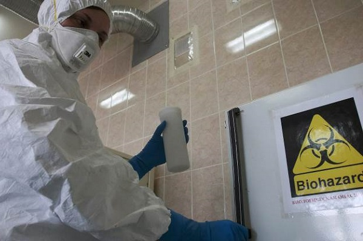
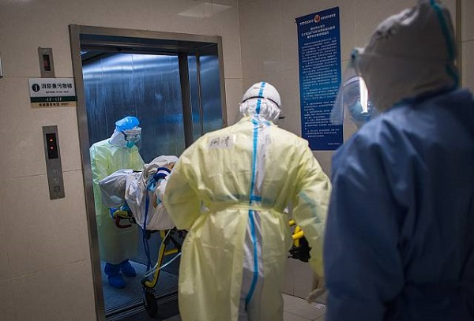

Could Covid-19 be a ‘Genetic Bioweapon’ as many BAME are dying globally
Labour’s new shadow cabinet have called on the UK government to investigate why more than one third of patients dying in ICU wards are from BAME backgrounds.
The Black Asian and Minority Ethnic (BAME) account for 13% of the UKs population, with 44% being doctors and 24% are nurses.
The government have launched a review into why people from the ethnic minorities are being disproportionately affected and are dying from coronavirus.
70% of those who have died from the BAME backgrounds worked in the frontline within the NHS across England and Wales.
An investigation relating to the disproportionate death toll will undoubtedly uncover more evidence over the complex, but yet striking relationship between health and inequality in Britain.
The British Medical Association (BMA) said that 'genetic bioweapons to target certain ethnic groups is a possibility,' according to the Guardian in 2004.
The BMA added that problems in advances in science for things such as 'treatment to Alzheimer’s and other debilitating diseases could also be used for malign purposes.'
Scientists warned in 2005, in the official view of the International Committee of the Red Cross (ICRC), there is 'The potential to target a particular ethnic group with a biological agent is probably not far off.
'These scenarios are not the product of the ICRC’s imagination but have either occurred or been identified by countless independent and governmental experts,' said Jacques Forster, Vice President of the ICRC.
The US government held a congressional committee hearing in 2008 focusing on ‘genetics and other human modification technologies.’
They asked is the world heading into a new kind of arms race, where it was discussed with experts how we can anticipate a world where rogue [and even not-so-rogue] states and non-state actors attempt to manipulate human genetics in ways that will horrify us.'
More worrying a US newspaper wrote in 2012, that a specific virus that targets individuals with a specific DNA sequence is within possibility in the near future.
A hypothetical scenario was put forward the US President at the time, whereby a virus will cause mild flu to the population with deadly symptoms.It cited that personalised gene therapy as evidence.
In 2016 it was suggested that a virus used as an 'ethnic bioweapon' could sterilise a 'genetically related ethnic population,' said the Foreign Policy paper.
Experts have warned for a number of years that a 'genetic weapon' is plausible and Russia undertook research on the influence of various substance on human genes, as have China.
A 2000 US policy paper entitled ‘Rebuilding America’s Defenses’ which was conducted by a think tank, Project for the New American Century (PNAC) said 'ethnic bioweapons' are a 'politically useful tool' as adversaries of the US could have already made.
The US Secretary of Defense William Cohen said in 1997 that the concept of an ethnic bioweapon is a possible risk, whilst Russia was undertaking research into the influence of various substance in human genes.
Across the world there are now over 2.4m cases of coronavirus, with over 162,000 deaths, and more than 3.7m people have fully recovered, according to highly credited John Hopkins University.
Posted On: 2021-04-20T12:09:00
Posted By: LLB Reporter


Content Date: 2021-04-20
Download Date: 2021-05-13
Document ID: L0C04C6U5